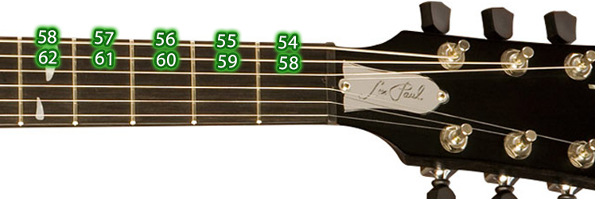
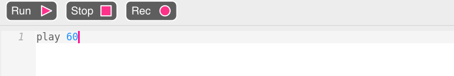
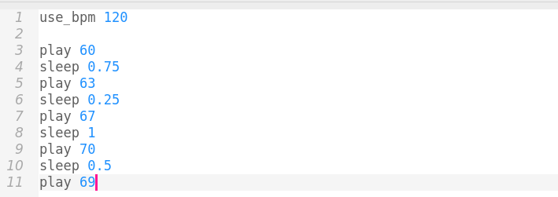
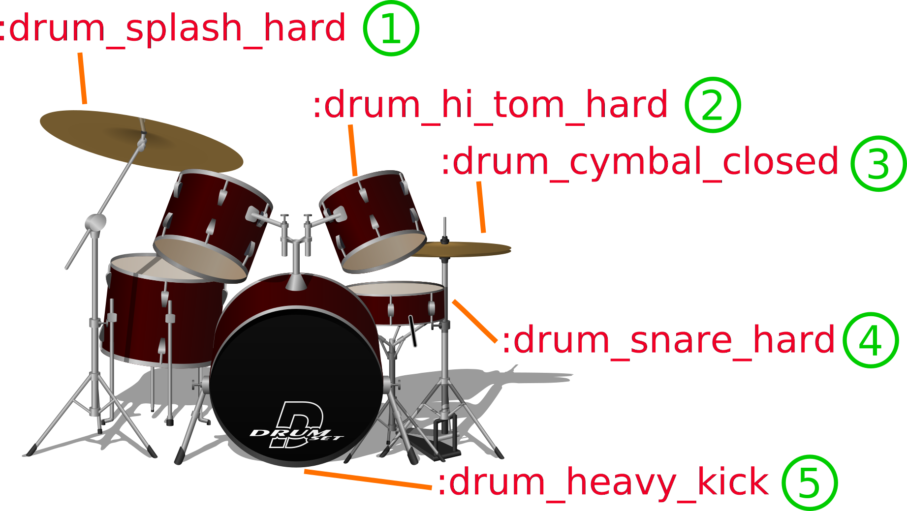

Taller de programación musical
Semana de la computación
¿Quiénes somos?
¿Qué estudiamos?
Licenciatura en Ciencias de la Computación
¿Qué vamos a hacer hoy?
¿Programar? ¿Y eso?

¿Esto es una canción?

¿Y esto?
¿Y esto?
¿Qué vamos a usar?
Sonic-pi
¿Cómo le decimos a Sonic-Pi qué sonido tocar?
Notas
Altura
Graves o agudas. De 0 a 127
|  |

|
|---|
Notas en Sonic-PI


Tiempo
Las canciones se rigen por un pulso base. El pulso nos sirve para entender cuando suena cada sonido.
Puedo tener más de un sonido por pulso.
Controlando el tiempo
Con sleep 1 le decimos a Sonic-Pi que espere 1 pulso.

Ejercicio:
Elegir 10 notas o más y hacerlas sonar, de la más grave a la más aguda
Recordar:
- Tocar una nota: play nota
- Esperar pulsos: sleep pulsos
- 0 más grave, 127 más aguda
¡Más rápido!
Con use_bpm 120 podemos decirle a Sonic-Pi que haga 120 pulsos por minuto.
¡A meterle ritmo!
¿Cómo hacemos para repetir nuestras notas?
Usamos live_loop para rodear el código que se repite.
Samples
- sample :misc_burp
- sample :ambi_lunar_land
- sample :bass_hard_c
- sample :elec_blup
Usando sample y sleep, armar la base de rock.
